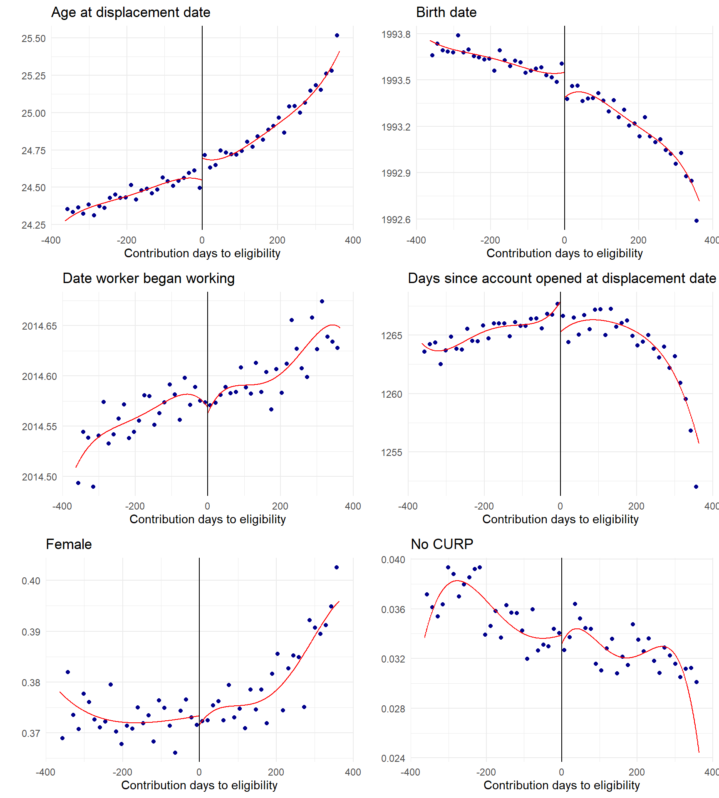

![]()
Job loss can cause severe income disruptions, yet in the absence of public intervention, workers must self-insure by borrowing, drawing down savings, or relying on informal support networks. Economists have long argued that such self-insurance is inefficient: when credit markets are incomplete and workers are risk-averse, precautionary strategies often fall short, and the welfare losses from income volatility can be large. Unemployment insurance (UI) programs address this market failure by pooling risk across individuals and time, thereby enabling workers to smooth consumption during periods of joblessness (Baily, 1978; Gruber, 1997). Beyond their insurance function, UI programs may also improve job match quality by reducing the urgency to accept the first available job, leading to higher earnings and long-run productivity (Acemoglu et al., 1999, 2000).
These benefits, however, must be balanced against potential moral hazard; generous benefits may reduce the urgency to search for work, prolonging unemployment. In developing countries, where fiscal capacity is limited and informality widespread, traditional UI systems are often unviable. As a result, many governments rely on self-financed alternatives designed to provide limited liquidity while minimizing work disincentives. One such program is Mexico’s Retiro Parcial por Desempleo (RPD), which allows unemployed formal-sector workers to withdraw a portion of their pension savings upon job loss.
This paper addresses the question: What are the causal labor market effects of access to the RPD program in Mexico? I study the impact of RPD eligibility and take-up on three key outcomes: (i) job search behavior, proxied by unemployment duration and employment survival; (ii) job quality, measured by reemployment wages and job duration; and (iii) medium-term labor market performance, defined as formal earnings and months worked in the three years following displacement. Understanding these effects is critical for assessing whether quasi-UI schemes like RPD enable better job matches or merely delay reemployment, and whether they reinforce or mitigate longer-term income risks.
A growing body of research has examined the effects of UI on labor market outcomes in both high- and low-income contexts. In advanced economies, natural experiments and regression discontinuity designs show that more generous UI consistently prolongs unemployment spells (e.g., Katz et al., 1990; Schmieder et al., 2012). Evidence on job quality is more mixed: while some studies report gains in reemployment wages and job stability (e.g., Nekoei et al., 2017; Centeno et al., 2006), others find negligible or even adverse effects on earnings (e.g., Schmieder et al., 2016; Le Barbanchon, 2016). In middle-income countries, UI interacts with informality in complex ways. For instance, Britto (2022) finds that in Brazil, over half of the additional unemployment induced by extended UI is offset by increased informal employment, raising concerns about behavioral leakage and program effectiveness.
This study contributes to the literature by being the first to estimate the causal impact of Mexico’s RPD program using administrative data and a fuzzy regression discontinuity design. While earlier causal studies (e.g., Velázquez Guadarrama, 2023; Carreño Godínez, 2025) relied on survey data, I leverage high-frequency longitudinal records from the Mexican social security system to construct a clean analytic sample and directly observe eligibility, take-up, and formal labor market trajectories. The RPD’s eligibility threshold—requiring at least two years of social security contributions—offers a compelling quasi-experimental setting. By exploiting this discontinuity and tracking administrative take-up, I estimate local average treatment effects (LATEs) for compliers across a rich set of labor market outcomes. While internal validity is strong, generalizability is limited to younger formal-sector workers near the eligibility threshold.
The results show that RPD take-up has large and significant effects on unemployment duration: users remain unemployed for approximately 36 additional weeks over a three-year period, from a baseline of 51 weeks for the ineligible, with effects evident within the first three months after displacement. However, these extended unemployment spells do not translate into higher job quality. On average, RPD users do not experience gains in wages, job duration, or cumulative earnings. In fact, most subgroups—particularly lower-income, younger, and female workers—experience substantial earnings losses over the three-year horizon. Although some subgroups, such as higher-income or male workers, see small gains in reemployment earnings, these are not sufficient to offset longer unemployment spells. These findings challenge optimistic models of UI that predict gains in productivity and matching quality (Acemoglu et al., 2000), and instead suggest that self-financed programs like RPD may distort job search without delivering meaningful returns in terms of labor market outcomes.
Importantly, heterogeneity analyses reveal that the effects of RPD vary markedly across demographic and macroeconomic conditions. Younger and lower-wage workers face much larger increases in unemployment and sharper earnings losses—suggesting that RPD may exacerbate, rather than alleviate, pre-existing vulnerabilities, and thus renforce inequality. In contrast, workers displaced during the COVID-19 crisis exhibit smaller increases in unemployment and even experience modest gains in cumulative earnings. This points to a potentially countercyclical role for liquidity provision, where temporary support during downturns may cushion income losses and facilitate labor market reintegration.
These findings offer several policy-relevant insights. First, the structure of the RPD program; being self-financed and actuarially neutral—appears to reduce concerns about fraud and fiscal burden but also limits its redistributive potential. Second, the regressive nature of its benefits—favoring those with more savings and stronger labor market histories—raises concerns about equity and adequacy. Lastly, while the program may be appropriate as a minimal safety net, it does not substitute for the functions of traditional unemployment insurance. The results contribute empirical grounding to policy debates in Mexico and other developing economies over whether to expand self-financed schemes, replace them with publicly funded UI, or design hybrid systems tailored to institutional capacity.
Nonetheless, the study has limitations. The fuzzy RD design identifies local treatment effects for a narrow group of workers—those displaced in their third year of formal labor market participation—limiting external validity. Moreover, the administrative data do not capture transitions into informal employment or broader welfare outcomes, such as psychological stress or household income dynamics. Finally, the modest first stage—only a 4 percentage point increase in take-up—constrains precision in second-stage estimates and necessitates cautious interpretation.
The remainder of the paper proceeds as follows. Section 1 provides institutional background on the RPD program and Mexico’s broader unemployment protection framework. Section 2 describes the data and sample construction. Section 3 outlines the empirical strategy. Section 4 presents the main results, including heterogeneity analysis. I finish with a discussion of the findings and their implications for policy.
Institutional Background
This section provides an overview of the institutional framework surrounding unemployment protection in Mexico, with a focus on the Retiro Parcial por Desempleo (RPD) program. I begin by describing the eligibility conditions and usage rules of the RPD, a mechanism that allows unemployed workers to make partial withdrawals from their individual pension accounts. I then document the evolution of the program’s adoption over time, highlighting its increased relevance during periods of economic crisis. Finally, I situate RPD within the broader context of income substitution in Mexico, where the failure to enforce legally mandated severance pay has rendered employer-based protections largely ineffective. In this setting, RPD emerges as a self-financed, readily accessible—but ultimately limited—alternative for workers facing job loss.
The Partial Withdrawal
The RPD program works as follows. The pension system in Mexico is a standard defined contributions scheme with individual accounts. While working in formality, workers accumulate resources financed in part by themselves, by their employer and by the government.
Eligibility Criteria
If a worker faces an unemployment spell of at least 46 days, she may withdraw a fraction of her individual account balance through the RPD. The amount of money a worker can have access to depends on the number of years since her account was opened and the number of weeks she has contributed to social security. The Ley del Seguro Social considers two eligibility schemes, each allowing a worker to withdraw an amount up to:
Ten months of the minimum wage or one month of her most recent wage, whichever is lower, for workers satisfying:
having entered the formal labor market at least three years ago, and
having contributed to social security for at least two years.1
Three times her monthly wage or 11.5% of her account balance, whichever is lower, for workers who entered the formal labor market at least five years ago, regardless of contributions to social security.
Figure 1 provides a visual representation of the eligibility criteria. Note that a worker who became dismissed after four years since she entered the labor market, and with only one year of contributions to social security would not be immediately eligible to withdraw funds from her account. However, if she just waited in unemployment for a year, she would become eligible through Scheme B, without having to make further contributions. Hence, ineligible workers may become eligible by the mere passage of time. This feature of the eligibility structure is important to the construction of the analysis sample, as I show in Section 2.2.
Moreover, workers who are eligible through both schemes may choose the one that allows them to withdraw the largest amount. Having used the RPD once, a worker may use it again, only after waiting for five years since her last withdrawal. Importantly, using the RPD not only depletes the worker’s individual pension savings account, but it also reduces proportionally the amount of days contributed to social security, which are used to determine and finance the pension at retirement age. This is a key feature of the RPD, as it allows workers to access their savings during unemployment, but it also reduces their future pension benefits.
Note: This figure conceptualizes eligibility to RPD. The x-axis shows the number of years since entry to the labor market, while the y-axis shows the number of years contributed to social security. The green area represents the eligibility criteria for Scheme A: having entered the formal labor market at least three years before and having contributed to social security for at lest two years. The blue area represents the eligibility criteria for Scheme B: having entered the formal labor market at least five years before, regardless of contributions to social security. The gray area represents the not feasible zone: workers cannot contribute more days to social security than they have been in the formal labor market.
Usage and Adoption
Figure 2 shows the cumulative number of partial withdraws from the individualized pension accounts since it was implemented in 1997. The data comes from a confidential administrative data set from the Instituto Mexicano del Seguro Social (IMSS). The RPD program was first implement in 2009 to give unemployed workers a source of income substitution in the context of the Great Recession. This event can be seen as a sharp increase in the usage of RPD, but also as a change in the trend of the number of withdrawals from the pension system. Accordingly, in the next big employment crisis, the COVID-19 pandemic, another trend increase followed. This shifts in the slope of the cumulative usage of RPD shows that employment crises have a persistent effect on the usage of the program, likely due to the increased salience of the program.
To put figures into perspective, by the end of 2024, 16,966,851 workers had made 24,598,838 withdrawals from the pension system. By that same moment, IMSS reported a total of 22,238,379 active workers in the formal labor market. Indeed, not all RPD users were active workers by the end of 2024, but this number gives a sense of the magnitude of the usage program.
Note: This figure shows the cumulative number of partial withdrawals (left) and the cumulative amount withdrawn (right) out of the Mexican individual pension account system (Afore). Source: IMSS.
Income Substitution for the Unemployed in Mexico
In theory, Mexican labor law provides mandatory severance pay (indemnización constitucional) as the main form of income substitution for workers who lose their jobs. Upon unjustified dismissal, employers are required to provide affected workers with three months of salary, plus seniority bonuses and accrued benefits. This legal severance framework reflects the broader Latin American tradition of employer liability systems as a substitute for unemployment insurance. However, in practice, enforcement of these entitlements is weak, uneven, and often illusory—rendering severance rights largely ineffective as a tool for income smoothing during unemployment.
The core issue lies in the functioning of Mexico’s labor courts. In particular, in Mexico City, workers who wish to claim their legally mandated severance must navigate a judicial process that is slow, opaque, and vulnerable to both corruption and administrative incompetence. Degetau (2023) provides experimental evidence from the Mexico City Local Labor Courts showing that the mere act of serving notification—a basic procedural step that triggers the legal process—is often compromised. The study reveals that notification orders may fail not due to complexity or distance but because of strategic delays enabled by collusion between defendants (employers) and court notifiers.
Further compounding these problems is the widespread information asymmetry among litigants. Sadka et al. (2024) demonstrate that plaintiffs in labor disputes often have unrealistic expectations about the outcomes of their cases, which leads to protracted litigation and missed opportunities for settlement. Their randomized controlled trial shows that providing plaintiffs with predictive information about expected case duration, probability of success, and likely monetary outcomes significantly increases same-day settlement rates and improves short-term financial well-being. However, this intervention also reveals the deep dysfunction of the system: only when plaintiffs are given external tools to navigate uncertainty can they extract meaningful value from the legal process.
The statistical odds of a dismissed worker successfully enforcing their severance rights are vanishingly low. As Sadka et al. (2024) document, more than half of all dismissed workers in Mexico report never receiving severance pay, yet only 13% pursue legal action—a striking indication of the widespread perception that litigation is futile . And with good reason: nearly 30% of lawsuits remain unresolved four years after being filed, leaving workers in legal limbo with no income and no resolution. Even among the rare plaintiffs who persist through the full litigation process and win a favorable judgment, only 20% ever collect the full amount awarded. The practical message is devastatingly clear: in Mexico’s current labor justice system, even winning your case is no guarantee of receiving what the law promises. For the average worker facing dismissal, the path to severance is not just slow and bureaucratic—it is overwhelmingly stacked against them.
Taken together, these findings paint a troubling picture: while Mexico’s legal framework nominally guarantees severance pay as income support for the unemployed, the institutions tasked with enforcing this right often fail to deliver. Procedural inefficiencies, the potential for corruption, and severe information gaps all contribute to a de facto collapse of enforcement. As a result, many dismissed workers are left without effective legal recourse, and severance pay—despite being codified in law—cannot be relied upon as a real source of income during unemployment.
In this vacuum, workers may increasingly turn to alternative, self-financed mechanisms such as the RPD program—a partial withdrawal from their individual pension accounts—as their only accessible form of income substitution. Unlike severance pay, RPD is automatic and does not require litigation. However, it also lacks redistributive features, may deplete retirement savings, and provides only modest relief. This shift from legal entitlements to self-funded liquidity illustrates a broader institutional failure: in the absence of credible enforcement, even well-designed labor protections may become functionally irrelevant.
Data
Data Sources
To study the effect of the Retiro Parcial por Desempleo (RPD) on labor market outcomes, I use two confidential administrative data sources. The first is a matched employer-employee panel from the Instituto Mexicano del Seguro Social (IMSS), which tracks the entirety of the formal labor market. From this data set, I construct eligibility criteria and labor market outcomes. I restrict the analysis to workers who first entered the formal labor market between January 2010 and December 2017.2 This yields a universe of 14,819,690 workers across 406,813,240 labor contracts.
Although the IMSS employment data does not directly record unemployment episodes (i.e., the cause, onset, or duration of unemployment), unemployment spells can be inferred from gaps between labor contracts. I define a gap as a period during which an individual is not formally employed by any firm. While such gaps do not necessarily imply unemployment3, they are sufficient for the RPD authority to consider a worker eligible for benefits.
The second data source is the administrative registry of partial withdrawals from individual pension accounts. This registry includes every instance of RPD usage and records the date of withdrawal, amount withdrawn, account balance, weeks contributed to social security at that point, the last employer’s ID, and the worker’s unique identifier (Número de Seguridad Social, NSS). Crucially, I use the NSS to match the two data sets, enabling me to track the labor market trajectories of RPD users before and after its use. See Section 1.2 for a detailed overview of the RPD program and its adoption.
Sample Selection
To estimate the effect of RPD on labor market outcomes, I leverage the eligibility criterion of having at least two years of contributions to social security at the moment of unemployment as s source of quasi-exogenous variation, (See Section 1 for context on the eligibility criteria.). Hence, I restrict the analysis sample to workers who (i) faced exactly one unemployment spell of at least 46 days during the third year since they joined the formal labor marked, and who (ii) had accumulated between one and three years worth of contributions to the social security system.
Additionally, I restricted the analysis sample to workers with (a) ages between 18 and 65 years old, (b) who were registered in the Régimen obligatorio as permanent or eventual workers, (c) were not self-employed, (d) were not registered to an agrarian firm, and (e) were not in the top 1% of the unemployment duration distribution.
These restrictions yield an analysis sample of 877,749 workers. Figure 3 shows the sample selection of workers in the eligibility criteria space at the time their unique unemployment spell began. Although the restrictions I impose on the analysis sample render my results non-generalizable to the entire population of workers, they allow me to leverage the institutional characteristics for identification of the effect of eligibility to RPD on labor market outcomes. Table 10 shows additional summary statistics of the analysis sample.
Note: This figure provides a conceptual representation of eligibility for the RPD program. The x-axis denotes years since entry into the formal labor market, and the y-axis indicates years of contributions to social security. The green area corresponds to Scheme A eligibility, which requires at least three years since labor market entry and a minimum of two years of social security contributions. The blue area corresponds to Scheme B eligibility, which requires at least five years since labor market entry, irrespective of contribution history. The red square marks the subsample selected for empirical analysis. The gray area represents an infeasible region, as individuals cannot accumulate more years of social security contributions than years since formal labor market entry.
Within the analysis sample, only those workers who had accumulated at least two years of contributions to the social security system by the time they become displaced are eligible to withdraw funds from their pension account. Table 1 shows workers’ features across eligibility status at the moment of displacement. Indeed, there is a systematic positive selection of workers to eligibility, as workers who are eligible have contributed more to social security, had higher wages and longer tenures before displacement. Groups show imbalance across other characteristics mainly because the sample size is large, while the magnitude of the difference is not economically significant. Critically for my identification strategy, I show in Section 3.1 that these differences across eligibility status are smooth around the eligibility threshold of 2 years of contributions to social security.
| Characteristic | Eligible N = 427,927 |
Ineligible N = 449,822 |
p-value |
|---|---|---|---|
| Displacement date | 2,018.07 (2.12) | 2,018.02 (2.10) | <0.001 |
| Outcomes | |||
| Take up - 12 months | 37,400 (8.7%) | 685 (0.2%) | <0.001 |
| Survival - 3 months | 322,651 (75%) | 366,208 (81%) | <0.001 |
| Unemp. Dur. - Cens. 6 months | 20.0 (7.2) | 21.2 (6.7) | <0.001 |
| Unemp. Dur. - Cens. 36 months | 50 (48) | 56 (50) | <0.001 |
| Eligibility criteria | |||
| Days since entry to formal labor market | 1,264 (104) | 1,265 (103) | <0.001 |
| Days contributed to SS | 914 (106) | 545 (106) | <0.001 |
| Previous job | |||
| Tenure (weeks) | 35 (35) | 21 (21) | <0.001 |
| Daily wage (MXN 2024) | 283 (199) | 248 (151) | <0.001 |
| Demographics | |||
| Female | 163,078 (38%) | 167,778 (37%) | <0.001 |
| Age at displacement date (years) | 24.9 (5.6) | 24.5 (5.3) | <0.001 |
| No CURP | 13,929 (3.3%) | 16,106 (3.6%) | <0.001 |
| Note: This table reports means and standard deviations (in parentheses) for key characteristics in the analysis sample, disaggregated by eligibility status at the date of displacement. For binary variables—such as *Take-up*, *Survival*, Female, and *No CURP*—the table reports the count and the corresponding percentage (in parentheses). *No CURP* indicates that the worker does not have a unique population identification number (CURP) registered with the IMSS. The p-value column reports the results from hypothesis tests of individual differences of means across eligible and ineligible groups. | |||
Empirical Strategy
To estimate the causal effect of the Retiro Parcial por Desempleo (RPD) on labor market outcomes I use a regression discontinuity design (RDD) exploiting the eligibility condition of having contributed to social security for at least two years at the moment of displacement. I leverage data on RPD take up to estimate the local average treatment effect (LATE) on compliers using a fuzzy discontinuity design. The fuzzy RDD can be expressed as a two-stage least squares regression, where the first stage estimates the effect of eligibility on take up of the RPD program as in
\[ T_{i} = \alpha + \beta D_i + f(C_i - 2) + u_i \quad \text{where} \quad |C_i - 2| \le h \tag{1}\]
where \(T_{i}\) is a dummy indicating worker \(i\)’s take up to RPD, \(D_i\) indicates whether \(i\) is eligible to withdraw funds from her pension account, i.e. \(C_i \ge 2\), where \(C_i\) represents \(i\)’s contributions to SS measured in years. \(f(\cdot)\) is a polynomial function of \(C_i\) and \(h\) is the bandwidth around the threshold. \(\beta\) identifies the causal effect of eligibility on take up of the RPD program.
Hence, the second stage estimates the effect of taking up RPD on labor market outcomes as in
\[ Y_i = \gamma + \tau \hat T_i + f(C_i - 2) + v_i \quad \text{where} \quad |C_i - 2| \le h \tag{2}\]
where \(Y_{i}\) is an outcome of interest, \(\hat T_i\) is the predicted value of the first stage. The main parameter of interest is \(\tau\), which identifies the LATE around the eligibility threshold. I use a local linear polynomial (\(p=1\)) with a triangular kernel and the bandwidth selected using the method proposed by Calonico et al. (2020). Specifically, I’m interested in the hypothesis test given by \(H_0: \tau=0\) vs \(H_1: \tau \ne 0\). For inference, I use heteroskedasticity-robust standard errors with nearest-neighbor variance estimator, as proposed by Calonico et al. (2014).
Evidence on Design Validity
I provide two main tests on the validity of the sharp design in Equation 1 plus an additional test on the validity of the fuzzy design in Equation 2. First, I show that there is no evidence of manipulation around the eligibility threshold. Second, I show that the covariates are balanced around the eligibility threshold. Finally, I show that the first stage is strong.
First, Figure 4 shows the result of the Cattaneo et al. (2020) test for manipulation of the running variable. The figure shows no significant bunching around the eligibility threshold, consistent with the absence of manipulation. Second, Figure 5, Figure 6 show the continuity of covariates of workers around the eligibility threshold. Crucially, Table 2 shows the estimation and inference of Equation 1, showing the covariates do not jump across the eligibility threshold systematically (Cattaneo et al., 2019). Finally, I present evidence on the strength of the first stage in Section 4.1.
Note: This figure shows there was no manipulation into eligibility by altering the days of contributions to social security at the moment of displacement (Cattaneo et al., 2020).

Note: This figure shows (i) sample means for evenly-spaced 14-day bins relative to the eligibility threshold, and (ii) the underlying regression function estimated using a triangular kernel, optimal bandwidth and a linear local polynomial using Calonico et al. (2015). The figure shows workers’ covariates do not systematically jump at the eligibility threshold.
Note: his figure shows (i) sample means for evenly-spaced 14-day bins relative to the eligibility threshold, and (ii) the underlying regression function estimated using a triangular kernel, optimal bandwidth and a linear local polynomial using Calonico et al. (2015). The figure shows workers’ previous job outcomes do not systematically jump at the eligibility threshold.
| Female | Birth date | Began working | Unemployment date | Age | |
|---|---|---|---|---|---|
| RPD | -0.001 | -0.143 | -0.005 | -0.011 | 0.125 |
| (0.005) | (0.059) | (0.022) | (0.022) | (0.051) | |
| Mean at cutoff - ineligible | 0.374 | 1,994 | 2,015 | 2,018 | 24.6 |
| Observations | 877,749 | 847,714 | 877,749 | 877,749 | 847,714 |
| Days since account opened | No CURP | Prev job duration (weeks) | Prev job total earnings | Prev job av monthly earnings | |
|---|---|---|---|---|---|
| RPD | -2.124 | -0.002 | 0.424 | 1634.627 | 311.151 |
| (1.005) | (0.002) | (0.315) | (843.632) | (214.297) | |
| Mean at cutoff - ineligible | 1,268 | 0.0343 | 26.7 | 50,504 | 8,997 |
| Observations | 877,749 | 877,749 | 877,749 | 877,749 | 877,749 |
| Note: This table reports the estimated coefficient of interest from Equation 4.1, obtained using a local linear regression with a triangular kernel and optimal bandwidth selection. Bias-corrected point estimates and robust standard errors are computed following the procedure of Calonico, Cattaneo, and Titiunik (2014). |
Results
This section presents the empirical results of the fuzzy regression discontinuity design (RDD) used to estimate the causal effect of the Retiro Parcial por Desempleo (RPD) program on labor market outcomes. I begin by documenting the first-stage effects of program eligibility on take-up, which justifies the fuzzy RDD strategy. I then estimate the local average treatment effect of RPD take-up on job search behavior and medium-term labor market outcomes. The results are complemented by a heterogeneity analysis that explores how these effects vary by gender, income level, age, and exposure to the COVID-19 pandemic.
First Stage
This section presents evidence that workers eligible to the RPD program (with at least two years of social security contributions at the time of job displacement) are significantly more likely to take up than ineligible workers. These first-stage results confirm three key points: (i) the running variable has been correctly constructed, (ii) the first stage of the fuzzy regression discontinuity design is strong, and (iii) eligibility has a meaningful, albeit modest, effect on program take-up.
Figure 7 shows that displaced workers just above the eligibility threshold are more likely to access the RPD program to withdraw funds from their pension account. Inference from Figure 8 and Table 3 confirms that the take-up discontinuity is statistically significant and stabilizes at around 4 percentage points after twelve months since displacement.
Interestingly, Figure 7 shows that take-up increases among initially ineligible workers after the twelfth month following displacement. This pattern should not be interpreted as conventional non-compliance. Rather, it reflects a change in eligibility status over time. Under Eligibility Mode B, workers become eligible for the RPD program once they accumulate at least five years of participation in the formal labor market, regardless of their contribution history (see Section 1 and Figure 1). Given that the analytic sample is restricted to individuals displaced between their third and fourth year in the formal sector, these workers only reach the five-year threshold approximately one year after displacement. Once eligible, they take up the program at rates comparable to the original compliers, which accounts for the observed stabilization in the intent-to-treat (ITT) effect after month 12 (see Figure 8).
Table 3 confirms that the ITT effect on program take-up is highly statistically significant, albeit small in magnitude. This justifies the use of a fuzzy RDD strategy to estimate the local average treatment effect of RPD on labor market outcomes among compliers. The modest size of the first-stage effect is consistent with the institutional design of the RPD program: unlike traditional unemployment insurance schemes, RPD allows only a partial withdrawal from workers’ own pension accounts. It is, by design, a self-financed benefit that internalizes the cost of unemployment support.
Note: This figure displays (i) sample means calculated within evenly spaced 14-day bins relative to the eligibility threshold, and (ii) the estimated regression function obtained using a local linear polynomial with a triangular kernel and optimal bandwidth selection following the method of Calonico et al. (2015). The results show a discrete increase in program take-up at the eligibility threshold.
Note: This figure presents the estimated coefficients of interest from Equation 1. Estimates are obtained using a local linear regression with a triangular kernel and optimal bandwidth selection. Bias-corrected point estimates and robust standard errors are computed following the method of Calonico et al. (2014). Vertical lines across point estimates represent 95% confidence intervals.
| Take up - 2 months | Take up - 3 months | Take up - 6 months | Take up - 9 months | Take up - 12 months | |
|---|---|---|---|---|---|
| RPD | 0.008 | 0.014 | 0.027 | 0.033 | 0.036 |
| (0.001) | (0.002) | (0.002) | (0.003) | (0.003) | |
| Mean at cutoff - ineligible | 0.00174 | 0.00602 | 0.0133 | 0.0187 | 0.0231 |
| Observations | 877,749 | 877,749 | 877,749 | 877,749 | 877,749 |
| Note: This table reports the estimated coefficient of interest from Equation 4.1, obtained using a local linear regression with a triangular kernel and optimal bandwidth selection. Bias-corrected point estimates and robust standard errors are computed following the procedure of Calonico, Cattaneo, and Titiunik (2014). |
Job Search Outcomes
I now turn to the effects of RPD take-up on labor market outcomes, estimated using the fuzzy regression discontinuity design described in Equation 2. Figure 9 and Table 4 (a) present the dynamic treatment effects on unemployment duration and employment survival. By three months after displacement, taking up RPD increases the probability of remaining unemployed (i.e., survival in unemployment) by 31 percentage points. After 36 months, the cumulative effect on unemployment duration amounts to 36 additional weeks. These effects are statistically significant at the 5% level and align with the broader empirical literature: income support during unemployment typically prolongs joblessness. At the eligibility cutoff, RPD users experience a 70% increase in unemployment duration relative to non-eligible workers after three years. These findings underscore the potential social costs of income-substitution programs such as RPD, particularly through the lens of forgone contributions to the social security system due to extended non-employment spells.
For completeness, Appendix Figure 10, Figure 11, and Figure 12, along with Table 11, present intention-to-treat (ITT) estimates for the same outcomes, as described in Equation 1, as well as the corresponding RD plots. The ITT estimates show smaller effects than those reported in comparable international settings. For instance, Britto (2022) finds that a lump-sum unemployment benefit program in Brazil increased employment survival by 1.9 percentage points after three months, whereas the estimated effect of RPD is just 0.7 percentage points over the same period. Similarly, Velázquez Guadarrama (2023), using ENOE survey data, reports that eligibility to RPD increases unemployment duration by 11.8 weeks (or 82.85 days), while the ITT estimate from this study points to a much smaller increase of just 0.65 weeks over a three-year horizon. Importantly, none of the ITT estimates reported here are statistically significant at the 5% level.
Turning to employment quality, Table Table 4 (b) reports the estimated effects of RPD take-up on post-displacement outcomes such as earnings and job duration. The composition of re-employed workers appears similar around the eligibility threshold in terms of prior earnings (see column 4), suggesting no substantial selection effects. However, there is limited evidence that RPD take-up improves subsequent job quality. While the point estimate for monthly earnings in the next job suggests a sizeable increase—more than a 100% gain relative to pre-displacement wages, or approximately $9,500 MXN—this estimate is only significant at the 10% level. Moreover, the effects on next job cumulative earnings and job duration are statistically indistinguishable from zero.
When placed in context with the existing literature, these ITT results point to a mixed picture. Britto (2022) finds a statistically significant 1.7% decline in annual earnings associated with Brazil’s program, while eligibility for RPD is associated with a non-significant 4.6% increase. Velázquez Guadarrama (2023), using ENOE data, finds a smaller yet statistically significant increase of 2.47% in wage income among eligible workers. Overall, while some point estimates suggest potentially positive effects of RPD on earnings, the lack of statistical significance and the inconsistency with prior studies call for cautious interpretation.
Note: This figure presents the estimated coefficients of interest from Equation 2. Estimates are obtained using a local linear regression with a triangular kernel and optimal bandwidth selection. Bias-corrected point estimates and robust standard errors are computed following the method of Calonico et al. (2014). Vertical lines across point estimates represent 95% confidence intervals.
| Survival - 3 months | Survival - 36 months | Duration - 6 months (wks) | Duration - 36 months (wks) | |
|---|---|---|---|---|
| RPD | 0.31 | 0.06 | 4.85 | 36.27 |
| (0.15) | (0.07) | (2.37) | (15.86) | |
| Mean at cutoff - ineligible | 0.778 | 0.106 | 20.5 | 51.5 |
| Observations | 877,749 | 877,749 | 877,749 | 877,749 |
| Monthly earnings | Total earnings | Job duration (weeks) | Prev. job earnings | |
|---|---|---|---|---|
| RPD | 9428.61 | 67095.54 | 16.49 | 9626.59 |
| (4882.68) | (61137.52) | (14.54) | (6055.86) | |
| Mean at cutoff - ineligible | 8,327 | 87,306 | 35.7 | 9,005 |
| Observations | 873,434 | 873,434 | 873,434 | 873,434 |
| Note: This table reports the estimated coefficient of interest from Equation 4.2, where treatment is defined as program take-up 12 months after displacement. Estimates are obtained using a local linear regression with a triangular kernel and optimal bandwidth selection. Bias-corrected point estimates and robust standard errors are computed following the method of Cattaneo, Idrobo, and Titiunik (2024). Currencies are expressed in 2024 Mexican Pesos. |
Medium Term Effects
This section examines the medium-term labor market outcomes associated with participation in the RPD program. Table 5 reports the estimated effects for RPD users, computed using the fuzzy regression discontinuity design described in Equation 2. Although none of the estimates reach statistical significance at the 5% level, the results suggest a persistent decline in formal labor earnings over the three-year post-displacement period. This decline appears to be driven entirely by the extensive margin, as RPD recipients were employed for fewer months and, on average, reported no wage earnings.
While most effects are not statistically distinguishable from zero, they may reflect longer-lasting disruptions in formal labor market attachment. Taken together, these findings indicate that the RPD program not only extends the duration of unemployment but also fails to enhance post-displacement job quality or promote higher long-term earnings in the formal sector—contrary to the predictions of the more optimistic unemployment insurance literature (Acemoglu et al., 1999, 2000).
| Total 3 years | Year 1 | Year 2 | Year 3 | |
|---|---|---|---|---|
| RPD | -20378.63 | -13116.15 | -16418.20 | -3121.18 |
| (44061.00) | (12983.56) | (17775.58) | (24304.58) | |
| Mean at cutoff - ineligible | 148,762 | 31,965 | 54,471 | 62,345 |
| Observations | 877,749 | 877,749 | 877,749 | 877,749 |
| Total 3 years | Year 1 | Year 2 | Year 3 | |
|---|---|---|---|---|
| RPD | -1.41 | -1.95 | -0.57 | -0.15 |
| (2.65) | (1.26) | (1.12) | (1.42) | |
| Mean at cutoff - ineligible | 15.3 | 3.8 | 5.67 | 5.86 |
| Observations | 877,749 | 877,749 | 877,749 | 877,749 |
| Total 3 years | Year 1 | Year 2 | Year 3 | |
|---|---|---|---|---|
| RPD | 903.31 | 634.12 | -1806.90 | -259.16 |
| (1808.21) | (1814.44) | (1954.97) | (2146.99) | |
| Mean at cutoff - ineligible | 8,903 | 8,012 | 8,959 | 9,902 |
| Observations | 794,688 | 578,415 | 650,874 | 633,586 |
| Note: This table reports the estimated coefficient of interest from Equation 4.2, where treatment is defined as program take-up 12 months after displacement. Estimates are obtained using a local linear regression with a triangular kernel and optimal bandwidth selection. Bias-corrected point estimates and robust standard errors are computed following the method of Cattaneo, Idrobo, and Titiunik (2024). Currencies are expressed in 2024 Mexican Pesos. |
Additional Results: Heterogeneous Treatment Effects
In this section, I present additional results on the heterogeneity of the effect of the RPD program on labor market outcomes. I explore the heterogeneity of the treatment effect by age, wage, and exposure to COVID-19 in Table 6, Table 7, and Table 9, respectively.
Income. Table 6 explores heterogeneous effects of the RPD program by pre-displacement income, dividing the sample at the median wage in the previous job ($6,669.2 MXN). Take-up rates do not differ significantly between the above- and below-median wage groups, suggesting comparable levels of program engagement across income levels.
However, the impact on labor market outcomes varies substantially. Among workers earning below the median, the RPD significantly increases the probability of remaining unemployed within the first three months following displacement. Over a 36-month horizon, the effect on unemployment duration for this group is nearly ten times larger than for their higher-income counterparts, indicating (i) a much more pronounced and persistent detachment from formal employment among lower-wage workers, and (ii) that this group of workers is more likely to take an informal job.
In terms of reemployment outcomes, RPD recipients with above-median pre-displacement wages secure jobs that pay approximately 67% more than those obtained by ineligible workers. In contrast, no statistically significant effect is found on the wages of reemployed workers in the below-median group. Over the full three-year horizon, higher-income workers exhibit a positive, albeit imprecise, impact on total earnings. Meanwhile, lower-income workers experience an average earnings loss of approximately $40,000 MXN—driven by prolonged unemployment and the absence of wage gains upon reemployment—although this estimate is not statistically distinguishable from zero.
These findings highlight the importance of accounting for income heterogeneity in program design. In the case of the RPD, the structure of benefits may inadvertently reinforce existing inequalities—offering greater long-term advantages to relatively better-off workers, while leaving lower-wage workers worse off in both employment duration and earnings trajectories.
| Take up (First stage) | Survival - 3 months | Duration - 36 months (wks) | Job duration (wks) | Monthly Earnings | Total Earnings - 3 years | Months Worked - 3 years | Monthly Earnings - 3 years | |
|---|---|---|---|---|---|---|---|---|
| RPD | 0.04 | 0.38 | 46.16 | 15.80 | 4737.20 | -39836.31 | -3.64 | -60.70 |
| (0.00) | (0.14) | (17.22) | (21.26) | (5196.56) | (38497.50) | (3.41) | (1467.20) | |
| Mean at cutoff - ineligible | 0.0121 | 0.797 | 53.8 | 36.2 | 7,269 | 119,239 | 14.6 | 7,617 |
| Observations | 438,875 | 438,875 | 438,875 | 436,925 | 436,925 | 438,875 | 438,875 | 393,137 |
| Take up (First stage) | Survival - 3 months | Duration - 36 months (wks) | Job duration (wks) | Monthly Earnings | Total Earnings - 3 years | Months Worked - 3 years | Monthly Earnings - 3 years | |
|---|---|---|---|---|---|---|---|---|
| RPD | 0.04 | -0.05 | -4.67 | 17.05 | 6416.72 | 17516.18 | 0.66 | 2081.56 |
| (0.00) | (0.14) | (15.71) | (21.47) | (3044.42) | (73028.49) | (4.21) | (2808.53) | |
| Mean at cutoff - ineligible | 0.027 | 0.763 | 49.7 | 35.2 | 9,437 | 178,004 | 16 | 10,180 |
| Observations | 438,874 | 438,874 | 438,874 | 436,509 | 436,509 | 438,874 | 438,874 | 401,551 |
| Note: This table reports the estimated coefficient of interest from Equation 4.1, obtained using a local linear regression with a triangular kernel and optimal bandwidth selection. Bias-corrected point estimates and robust standard errors are computed following the procedure of Calonico, Cattaneo, and Titiunik (2014). Panel A reports results for individuals whose earnings in their previous job were below the sample median wage ($6,669.2), while Panel B reports results for those above the median. All monetary values are expressed in 2024 Mexican Pesos. |
Age. Table 7 examines heterogeneous effects of the RPD program by age at the time of displacement, dividing the sample at the median age of 22.9 years. As with income, take-up rates do not differ significantly between younger and older workers, indicating comparable engagement with the program across age groups.
The effects on unemployment duration are not statistically significant for either group over the short (3-month) or medium (36-month) horizons. However, point estimates suggest meaningful differences in magnitude. By three months, younger workers exhibit a 23 percentage point increase in the probability of remaining unemployed, compared to only a 10 percentage point increase for older workers—more than twice the effect. This disparity widens substantially over time: after 36 months, the cumulative increase in unemployment duration is 35 weeks for younger workers, compared to just 3 weeks for older workers—an effect nearly ten times larger.
In contrast, there is no clear evidence of differential effects on post-displacement job quality. All estimates related to wages and job duration in the next job are statistically indistinguishable from zero for both age groups.
Over the full three-year horizon, younger workers appear to experience greater earnings losses. On average, they earned approximately $20,000 MXN less than their counterparts who were not eligible for RPD, compared to a $9,000 MXN loss among older workers. These estimates, however, are imprecise and should be interpreted with caution.
Taken together, these findings suggest that age is an important dimension of heterogeneity in the effects of unemployment assistance programs. In the case of the RPD, younger workers may face more persistent labor market disruptions, with weaker labor market attachement, potentially compounding early-career vulnerabilities.
| Take up (First stage) | Survival - 3 months | Duration - 36 months (wks) | Job duration (wks) | Monthly Earnings | Total Earnings - 3 years | Months Worked - 3 years | Monthly Earnings - 3 years | |
|---|---|---|---|---|---|---|---|---|
| RPD | 0.04 | 0.23 | 35.16 | -4.43 | 60.02 | -20965.39 | -2.11 | 357.61 |
| (0.00) | (0.17) | (17.98) | (18.77) | (1805.32) | (42939.90) | (3.82) | (1261.62) | |
| Mean at cutoff - ineligible | 0.0162 | 0.767 | 47.7 | 33.4 | 7,747 | 141,633 | 15.9 | 8,327 |
| Observations | 423,857 | 423,857 | 423,857 | 422,155 | 422,155 | 423,857 | 423,857 | 388,767 |
| Take up (First stage) | Survival - 3 months | Duration - 36 months (wks) | Job duration (wks) | Monthly Earnings | Total Earnings - 3 years | Months Worked - 3 years | Monthly Earnings - 3 years | |
|---|---|---|---|---|---|---|---|---|
| RPD | 0.04 | 0.10 | 3.10 | 28.18 | 9759.34 | -9224.03 | -1.35 | 114.08 |
| (0.00) | (0.12) | (16.58) | (19.68) | (6752.33) | (59252.06) | (3.75) | (2246.94) | |
| Mean at cutoff - ineligible | 0.0214 | 0.793 | 56.1 | 38.4 | 9,032 | 157,792 | 14.9 | 9,601 |
| Observations | 423,857 | 423,857 | 423,857 | 421,318 | 421,318 | 423,857 | 423,857 | 378,703 |
| Note: This table reports the estimated coefficient of interest from Equation 4.2, where treatment is defined as program take-up 12 months after displacement. Estimates are obtained using a local linear regression with a triangular kernel and optimal bandwidth selection. Bias-corrected point estimates and robust standard errors are computed following the method of Cattaneo, Idrobo, and Titiunik (2024). Panel A shows the results for the below median age group (22.3 years), while panel B shows the results for the above median age group. Currencies are expressed in 2024 Mexican Pesos. |
Gender. Table 8 examines the heterogeneous effects of the RPD program by gender. Panel A presents results for males, while Panel B reports estimates for females. Take-up rates are similar across groups, with no statistically significant gender differences in program participation 12 months after displacement.
However, the effects on labor market outcomes diverge markedly by gender. Among males, RPD take-up increases the probability of remaining unemployed three months after displacement by 40 percentage points. This effect persists over time, resulting in a cumulative increase in unemployment duration of 49 weeks over the subsequent three years—an effect that is both large and statistically significant. In contrast, female recipients exhibit no significant change in short-term survival or long-term unemployment duration. The point estimate for unemployment duration is actually negative (–8.7 weeks), but imprecisely estimated.
Differences in earnings outcomes are similarly pronounced. Male RPD recipients experience large, positive effects on monthly earnings in their next job—approximately $11,252 MXN higher than ineligible males—and a cumulative three-year earnings gain of $1,066 MXN. These estimates, while imprecise, suggest a potential improvement in job quality among men. In contrast, female RPD recipients see no significant gain in monthly earnings and suffer an average three-year total earnings loss of $16,126 MXN. This reduction in earnings is likely driven by delayed labor market reentry and the absence of wage gains upon reemployment.
Interestingly, the margin of adjustment differs across genders. Male recipients work 2.7 fewer months over the three-year period, while female recipients actually work 1.5 months more. Yet, the increase in work months among women does not translate into earnings gains, possibly reflecting reemployment in lower-wage or more precarious jobs.
Taken together, these findings highlight significant gender disparities in the labor market effects of the RPD program. While male recipients face longer unemployment durations, they appear to recover through access to better-paying jobs. Female recipients, in contrast, do not experience improvements in job quality and incur significant earnings losses. These results underscore the need for gender-sensitive design in unemployment support policies, as uniform benefit structures may yield unequal labor market outcomes.
| Take up (First stage) | Survival - 3 months | Duration - 36 months (wks) | Job duration (wks) | Monthly Earnings | Total Earnings - 3 years | Months Worked - 3 years | Monthly Earnings - 3 years | |
|---|---|---|---|---|---|---|---|---|
| RPD | 0.04 | 0.40 | 49.08 | 14.55 | 11252.23 | 3074.41 | -2.73 | 1066.12 |
| (0.00) | (0.14) | (18.27) | (16.88) | (6816.09) | (52415.38) | (3.08) | (1827.85) | |
| Mean at cutoff - ineligible | 0.0136 | 0.753 | 47 | 33.3 | 8,288 | 155,075 | 16 | 8,965 |
| Observations | 546,893 | 546,893 | 546,893 | 544,534 | 544,534 | 546,893 | 546,893 | 502,724 |
| Take up (First stage) | Survival - 3 months | Duration - 36 months (wks) | Job duration (wks) | Monthly Earnings | Total Earnings - 3 years | Months Worked - 3 years | Monthly Earnings - 3 years | |
|---|---|---|---|---|---|---|---|---|
| RPD | 0.04 | -0.17 | -8.71 | 15.66 | 1994.00 | -16126.79 | 1.51 | 1194.77 |
| (0.01) | (0.14) | (17.36) | (22.98) | (2160.69) | (59431.83) | (3.68) | (2252.93) | |
| Mean at cutoff - ineligible | 0.0281 | 0.823 | 59.3 | 39.7 | 8,403 | 137,174 | 14.1 | 8,794 |
| Observations | 330,856 | 330,856 | 330,856 | 328,900 | 328,900 | 330,856 | 330,856 | 291,964 |
| Note: This table reports the estimated coefficient of interest from Equation 4.2, where treatment is defined as program take-up 12 months after displacement. Estimates are obtained using a local linear regression with a triangular kernel and optimal bandwidth selection. Bias-corrected point estimates and robust standard errors are computed following the method of Cattaneo, Idrobo, and Titiunik (2024). Panel A shows the results for the male group, while panel B shows the results for the female group. Currencies are expressed in 2024 Mexican Pesos. |
Exposure to COVID-19. Table 9 explores heterogeneous effects of the RPD program based on whether individuals were displaced before or after the onset of the COVID-19 pandemic. Panel A includes workers who were displaced before March 2019, and thus had at least a full year of unemployment before the pandemic hit in March 2020. These individuals are considered to have no exposure to pandemic-related labor market disruptions during their initial post-displacement period. Panel B, by contrast, focuses on individuals displaced after March 2020, who faced full exposure to the labor market conditions created by the pandemic.
First-stage estimates show that take-up rates are slightly lower among post-pandemic displacees (3%) than among pre-pandemic ones (4%), although the difference is modest. However, labor market outcomes diverge sharply across cohorts.
Among workers with no exposure to the pandemic (Panel A), RPD take-up leads to substantial and significant increases in unemployment duration. The probability of remaining unemployed at 3 months rises by 37 percentage points, and cumulative unemployment duration increases by over 52 weeks—essentially one additional year of joblessness. Despite these adverse effects on employment continuity, there is a modest increase in monthly earnings in the next job (12,416 MXN), although total earnings over the three-year horizon fall by 8,539 MXN, suggesting that the gains in job quality do not fully offset the costs of prolonged unemployment.
In contrast, among workers fully exposed to the COVID-19 crisis (Panel B), RPD take-up is associated with much weaker effects on labor market behavior. The effect on 3-month survival is negligible (1 pp), and the cumulative increase in unemployment duration is only 22 weeks. Strikingly, reemployment outcomes for this group appear worse: RPD recipients experience a decline in job duration (–9.4 weeks) and a relatively small increase in next-job earnings (5,011 MXN). However, despite weaker job quality indicators, total earnings over the three-year period rise by 37,277 MXN—likely due to higher reemployment rates and a labor market rebound post-pandemic.
These results suggest that the macroeconomic context at the time of displacement plays a crucial role in shaping the effects of unemployment assistance. While RPD recipients displaced before COVID-19 faced steep penalties in terms of extended non-employment and modest earnings gains, those displaced during the pandemic experienced smaller disruptions and more favorable cumulative earnings trajectories. Importantly, this contrast highlights the interaction between individual-level support programs and broader labor market conditions: a well-timed benefit may facilitate recovery in a tightening labor market, while the same benefit in a more stable environment may prolong detachment without improving long-term outcomes.
| Take up (First stage) | Survival - 3 months | Duration - 36 months (wks) | Job duration (wks) | Monthly Earnings | Total Earnings - 3 years | Months Worked - 3 years | Monthly Earnings - 3 years | |
|---|---|---|---|---|---|---|---|---|
| RPD | 0.04 | 0.37 | 52.76 | 18.01 | 12416.29 | -8539.55 | -2.92 | 1241.50 |
| (0.00) | (0.19) | (21.75) | (26.88) | (8273.95) | (55380.27) | (4.25) | (2301.33) | |
| Mean at cutoff - ineligible | 0.0113 | 0.775 | 50.7 | 38.3 | 8,003 | 143,580 | 15.5 | 8,497 |
| Observations | 561,937 | 561,937 | 561,937 | 560,491 | 560,491 | 561,937 | 561,937 | 503,428 |
| Take up (First stage) | Survival - 3 months | Duration - 36 months (wks) | Job duration (wks) | Monthly Earnings | Total Earnings - 3 years | Months Worked - 3 years | Monthly Earnings - 3 years | |
|---|---|---|---|---|---|---|---|---|
| RPD | 0.03 | 0.01 | 21.99 | -9.39 | 5010.11 | 37277.66 | -2.31 | 4689.68 |
| (0.01) | (0.20) | (25.68) | (19.50) | (2769.82) | (69127.25) | (4.50) | (3634.36) | |
| Mean at cutoff - ineligible | 0.0491 | 0.78 | 48.4 | 30.1 | 9,004 | 169,405 | 16.1 | 9,879 |
| Observations | 156,826 | 156,826 | 156,826 | 155,207 | 155,207 | 156,826 | 156,826 | 148,663 |
| Note: This table reports the estimated coefficient of interest from Equation 4.2, where treatment is defined as program take-up 12 months after displacement. Estimates are obtained using a local linear regression with a triangular kernel and optimal bandwidth selection. Bias-corrected point estimates and robust standard errors are computed following the method of Cattaneo, Idrobo, and Titiunik (2024). Currencies are expressed in 2024 Mexican Pesos. |
Conclusions
This thesis evaluates the labor market effects of Mexico’s Retiro Parcial por Desempleo (RPD), a policy that allows displaced formal sector workers to make early withdrawals from their pension savings. Leveraging a discontinuity at two years of social security contributions, I implement a fuzzy regression discontinuity design to estimate the local average treatment effect of program take-up on labor market outcomes.
The results show that RPD take-up substantially increases unemployment duration, with significant effects observable as early as three months after displacement and persisting over a three-year horizon. The increase in non-employment is large and robust, suggesting that liquidity provision through the RPD distorts job search incentives. However, there is no consistent evidence that RPD take-up improves job quality or medium-term formal labor income. While some groups—particularly higher-income or male workers—experience modest earnings gains upon reemployment, these are offset by longer unemployment spells. For lower-income, younger, and female workers, RPD take-up is associated with longer unemployment and cumulative earnings losses, although some of these estimates are imprecise.
Take-up rates remain low, and the first-stage estimates are small but precise, indicating that the program successfully targets a narrow set of workers. Notably, heterogeneity analysis reveals that labor market context plays a crucial role: among workers displaced during the COVID-19 pandemic, RPD take-up did not extend unemployment duration and is even associated with higher total earnings. These findings suggest that the RPD may serve a countercyclical role, particularly in times of systemic labor market disruption.
Several limitations of the study should be acknowledged. First, the fuzzy RD design identifies local effects for compliers—those induced to take up the program by marginal eligibility—limiting external validity. Second, the administrative data do not capture informal employment or non-wage welfare outcomes, potentially understating total adjustment margins. Third, despite large point estimates, wide confidence intervals in the second stage warrant cautious interpretation.
My results underscore the institutional tensions in Mexico’s fragmented income protection system. Severance pay, the de jure main income substitute, is often inaccessible due to weak legal enforcement (Sadka et al., 2024; Degetau, 2023). In this context, the RPD emerges as a second-best option: it is self-financed, administratively simple, and unlikely to induce fraud. Yet this model shifts the burden of income protection onto workers themselves—especially those with fewer savings—thereby reinforcing labor market inequalities.
A more ambitious policy agenda would involve developing a publicly funded unemployment insurance system that ensures risk-sharing beyond individual savings. However, such a system would require overcoming institutional barriers: effective delivery depends not only on eligibility design but also on credible enforcement and administrative capacity.
The findings point to several promising directions for future research. First, aggregate behavioral effects—such as changes in employer hiring or firing practices—remain an open question. Second, the observed heterogeneity by income, age, gender, and macroeconomic context calls for richer models of household and labor market behavior under liquidity constraints. Finally, the intersection between legal institutions and social protection policy in low-capacity states remains an underexplored but vital area for understanding the design and implementation of unemployment assistance in developing countries.
References
Acemoglu, D. and Shimer, R., Efficient Unemployment Insurance, Journal of Political Economy, vol. 107, no. 5, pp. 893–928, from https://www.journals.uchicago.edu/doi/abs/10.1086/250084, October 1999. DOI: 10.1086/250084
Acemoglu, D. and Shimer, R., Productivity Gains from Unemployment Insurance, European Economic Review, vol. 44, no. 7, pp. 1195–1224, from https://www.sciencedirect.com/science/article/pii/S0014292100000350, June 1, 2000. DOI: 10.1016/S0014-2921(00)00035-0
Baily, M. N., Some Aspects of Optimal Unemployment Insurance, Journal of Public Economics, vol. 10, no. 3, pp. 379–402, 1978.
Britto, D. G. C., The Employment Effects of Lump-Sum and Contingent Job Insurance Policies: Evidence from Brazil, The Review of Economics and Statistics, vol. 104, no. 3, pp. 465–82, from https://direct.mit.edu/rest/article/104/3/465/97670/The-Employment-Effects-of-Lump-Sum-and-Contingent, May 9, 2022. DOI: 10.1162/rest_a_00948
Calonico, S., Cattaneo, M. D. and Farrell, M. H., Optimal Bandwidth Choice for Robust Bias-Corrected Inference in Regression Discontinuity Designs, The Econometrics Journal, vol. 23, no. 2, pp. 192–210, from https://academic.oup.com/ectj/article/23/2/192/5625071, May 1, 2020. DOI: 10.1093/ectj/utz022
Calonico, S., Cattaneo, M. D. and Titiunik, R., Robust Nonparametric Confidence Intervals for Regression-Discontinuity Designs: Robust Nonparametric Confidence Intervals, Econometrica, vol. 82, no. 6, pp. 2295–2326, from http://doi.wiley.com/10.3982/ECTA11757, November 2014. DOI: 10.3982/ECTA11757
Calonico, S., Cattaneo, M. D. and Titiunik, R., Optimal Data-Driven Regression Discontinuity Plots, Journal of the American Statistical Association, vol. 110, no. 512, pp. 1753–69, from https://www.tandfonline.com/doi/full/10.1080/01621459.2015.1017578, October 2, 2015. DOI: 10.1080/01621459.2015.1017578
Carreño Godínez, G., Análisis del impacto de los seguros de desempleo en el emprendimiento. Evidencia de México, ITAM, Ciudad de México, México, 2025.
Cattaneo, M. D., Idrobo, N. and Titiunik, R., A Practical Introduction to Regression Discontinuity Designs: Foundations, Elements in Quantitative and Computational Methods for the Social Sciences, accessed October 5, 2023, from https://www.cambridge.org/core/elements/practical-introduction-to-regression-discontinuity-designs/F04907129D5C1B823E3DB19C31CAB905, November 2019. DOI: 10.1017/9781108684606
Cattaneo, M. D., Jansson, Michael and Ma, X., Simple Local Polynomial Density Estimators, Journal of the American Statistical Association, vol. 115, no. 531, pp. 1449–55, accessed April 13, 2025, from https://doi.org/10.1080/01621459.2019.1635480, July 2, 2020. DOI: 10.1080/01621459.2019.1635480
Centeno, M. and Novo, Á. A., The Impact of Unemployment Insurance Generosity on Match Quality Distribution, Economics Letters, vol. 93, no. 2, pp. 235–41, from https://www.sciencedirect.com/science/article/pii/S0165176506001832, November 1, 2006. DOI: 10.1016/j.econlet.2006.05.019
Degetau, E., Corruption or incompetence? Disentangle through learning, ITAM, Ciudad de México, México, Feb. 2023.
Gruber, J., The Consumption Smoothing Benefits of Unemployment Insurance, American Economic Review, vol. 87, no. 1, pp. 192–205, from https://ideas.repec.org//a/aea/aecrev/v87y1997i1p192-205.html, 1997.
Katz, L. F. and Meyer, B. D., The Impact of the Potential Duration of Unemployment Benefits on the Duration of Unemployment, Journal of Public Economics, vol. 41, no. 1, pp. 45–72, from https://www.sciencedirect.com/science/article/pii/004727279290056L, February 1, 1990. DOI: 10.1016/0047-2727(92)90056-L
Le Barbanchon, T., The Effect of the Potential Duration of Unemployment Benefits on Unemployment Exits to Work and Match Quality in France, Labour Economics, vol. 42, pp. 16–29, from https://www.sciencedirect.com/science/article/pii/S0927537116300550, October 1, 2016. DOI: 10.1016/j.labeco.2016.06.003
Nekoei, A. and Weber, A., Does Extending Unemployment Benefits Improve Job Quality?, American Economic Review, vol. 107, no. 2, pp. 527–61, from https://www.aeaweb.org/articles?id=10.1257/aer.20150528, February 2017. DOI: 10.1257/aer.20150528
Sadka, J., Seira, E. and Woodruff, C., Information and Bargaining Through Agents: Experimental Evidence from Mexico’s Labour Courts, The Review of Economic Studies, p. rdae003, from https://doi.org/10.1093/restud/rdae003, February 1, 2024. DOI: 10.1093/restud/rdae003
Schmieder, J. F. and Wachter, T. von, The Effects of Unemployment Insurance Benefits: New Evidence and Interpretation, Annual Review of Economics, vol. 8, no. 1, pp. 547–81, from https://doi.org/10.1146/annurev-economics-080614-115758, 2016. DOI: 10.1146/annurev-economics-080614-115758
Schmieder, J. F., Wachter, T. von and Bender, S., The Long-Term Effects of UI Extensions on Employment, American Economic Review, vol. 102, no. 3, pp. 514–19, from https://www.aeaweb.org/articles?id=10.1257/aer.102.3.514, May 2012. DOI: 10.1257/aer.102.3.514
Velázquez Guadarrama, F., Seguro de Desempleo En México : Evidencia Del Programa de Retiros Anticipados Por El Desempleo Del Sistema de Ahorro Para El Retiro, ITAM, Ciudad de México, México, Jun. 12, 2023.
Appendix
| Variable | n | Mean | Median | Std.Dev. | Min | Max |
|---|---|---|---|---|---|---|
| Covariates | ||||||
| Age at displacement date | 847,714 | 24.7 | 22.9 | 5.5 | 18.0 | 65.0 |
| Birth date | 847,714 | 1,993.4 | 1,994.6 | 5.7 | 1,948.5 | 2,003.5 |
| Date worker began working | 877,749 | 2,014.6 | 2,014.9 | 2.1 | 2,010.0 | 2,018.0 |
| Days since account opened at displacement date | 877,749 | 1,264.5 | 1,259.0 | 103.1 | 1,095.0 | 1,460.0 |
| Displacement date | 877,749 | 2,018.0 | 2,018.3 | 2.1 | 2,013.0 | 2,022.0 |
| Female | 877,749 | 0.4 | 0.0 | 0.5 | 0.0 | 1.0 |
| No CURP | 877,749 | 0.0 | 0.0 | 0.2 | 0.0 | 1.0 |
| Previous Job | ||||||
| Duration of previous job (weeks) | 877,749 | 27.7 | 16.4 | 29.7 | 0.1 | 156.3 |
| Monthly earnings in previous job (2024 MXN) | 877,749 | 9,095.4 | 6,669.2 | 19,424.5 | 1,631.2 | 3,634,843.3 |
| Total earnings in previous job (2024 MXN) | 877,749 | 54,235.8 | 25,769.4 | 82,490.9 | 107.6 | 2,894,843.6 |
| Partial Withdrawal (RPD) | ||||||
| Amount withdrawn (2024 MXN) | 62,632 | 7,690.6 | 6,637.5 | 4,365.9 | 324.2 | 134,480.5 |
| Contributed weeks at take up date | 62,632 | 125.9 | 130.0 | 29.1 | 0.0 | 1,273.0 |
| Days to take up | 62,632 | 440.8 | 228.0 | 477.2 | 46.0 | 2,892.0 |
| Days withdrawn | 62,632 | 318.4 | 301.0 | 126.8 | 0.0 | 4,075.0 |
| Job Search Outcomes | ||||||
| Survival out of formal employment after 3 months | 877,749 | 0.8 | 1.0 | 0.4 | 0.0 | 1.0 |
| Survival out of formal employment after 36 months | 877,749 | 0.1 | 0.0 | 0.3 | 0.0 | 1.0 |
| Weeks out of formal employment censored at 3 months | 877,749 | 12.1 | 12.9 | 1.8 | 6.3 | 12.9 |
| Weeks out of formal employment censored at 36 months | 877,749 | 53.1 | 32.6 | 49.1 | 6.3 | 154.3 |
| Next Job Quality | ||||||
| Duration of next job (weeks) | 873,434 | 36.8 | 14.7 | 59.3 | 0.1 | 611.3 |
| Monthly earnings in next job (2024 MXN) | 873,434 | 8,461.7 | 6,948.8 | 6,643.8 | 1,599.3 | 2,171,267.3 |
| Total earnings in next job (2024 MXN) | 873,434 | 91,888.4 | 23,412.3 | 245,995.0 | 105.4 | 10,500,054.5 |
| Medium Term Outcomes (Over 3 Years) | ||||||
| Average monthly earnings after displacement (2024 MXN) | 794,688 | 9,007.6 | 7,515.1 | 5,841.1 | 3,163.5 | 84,996.0 |
| Months worked after displacement | 877,749 | 15.2 | 14.1 | 11.5 | 0.0 | 89.5 |
| Total earnings after displacement (2024 MXN) | 877,749 | 149,523.5 | 102,486.9 | 180,264.6 | 0.0 | 4,035,597.8 |
| Note: This table reports summary statistics for the variables used in the analysis. The statistics are based on the final sample used for estimation. | ||||||
Note: This figure shows (i) sample means for evenly-spaced 14-day bins relative to the eligibility threshold, and (ii) the underlying regression function estimated using a triangular kernel, optimal bandwidth and a linear local polynomial using Calonico et al. (2015).
Note: This figure shows (i) sample means for evenly-spaced 14-day bins relative to the eligibility threshold, and (ii) the underlying regression function estimated using a triangular kernel, optimal bandwidth and a linear local polynomial using Calonico et al. (2015).
Note: This figure shows the estimated coefficient of interest in Equation 1 . The estimates are obtained using a triangular kernel, optimal bandwidth and a linear local polynomial. Bias corrected estimates and robust standard errors computed using Calonico et al. (2014). 95 percent confidence intervals.
| Survival - 3 months | Survival - 36 months | Duration (wks) - 6 months | Duration (wks) - 36 months | |
|---|---|---|---|---|
| RPD | 0.007 | 0.001 | 0.085 | 0.648 |
| (0.005) | (0.003) | (0.075) | (0.513) | |
| Mean at cutoff - ineligible | 0.78 | 0.108 | 20.5 | 51.9 |
| Observations | 877,749 | 877,749 | 877,749 | 877,749 |
| Monthly earnings (2024 MXN) | Total earnings (2024 MXN) | Job duration (weeks) | Prev. job earnings | |
|---|---|---|---|---|
| RPD | 283.48 | 1469.40 | 0.56 | 276.07 |
| (163.04) | (2178.74) | (0.62) | (215.71) | |
| Mean at cutoff - ineligible | 8,333 | 87,703 | 35.7 | 8,978 |
| Observations | 873,434 | 873,434 | 873,434 | 873,434 |
| Note: This table reports the estimated coefficient of interest from Equation 4.1, obtained using a local linear regression with a triangular kernel and optimal bandwidth selection. Bias-corrected point estimates and robust standard errors are computed following the procedure of Calonico, Cattaneo, and Titiunik (2014). |
Footnotes
Contributions to social security need not be continuous to reach eligibility to RPD.↩︎
This restriction ensures that all workers are subject to the same pension reform (in effect since July 1997) and thus face uniform incentives regarding the accumulation of weeks of contribution and the use of their individual pension account balance for income substitution during unemployment.↩︎
A gap could result from voluntary separation, a transition into informal work, or involuntary displacement.↩︎